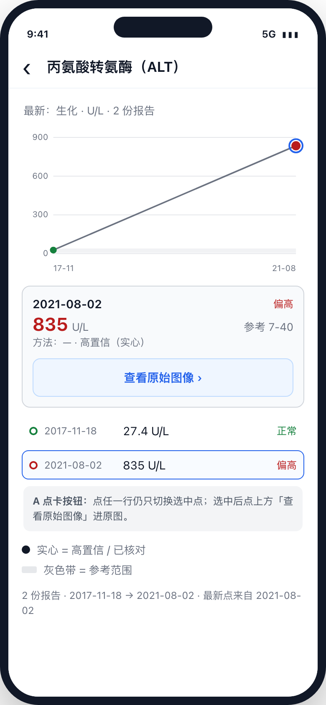
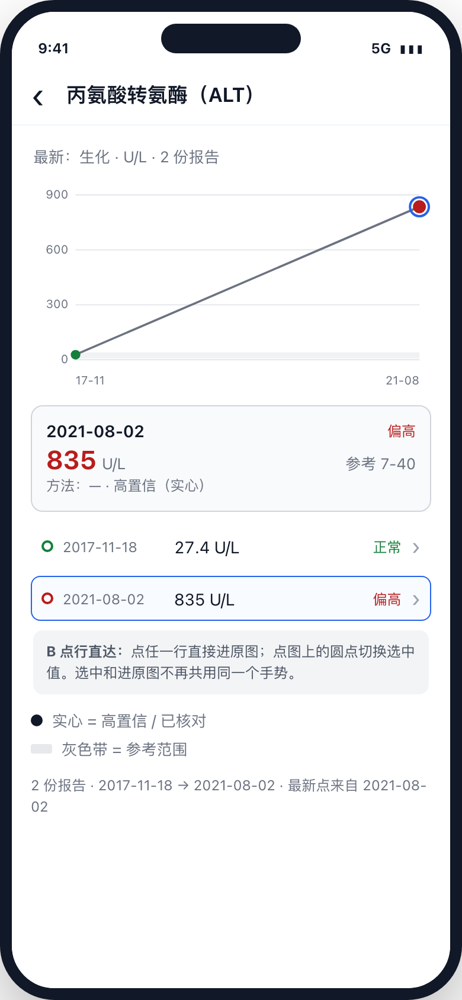
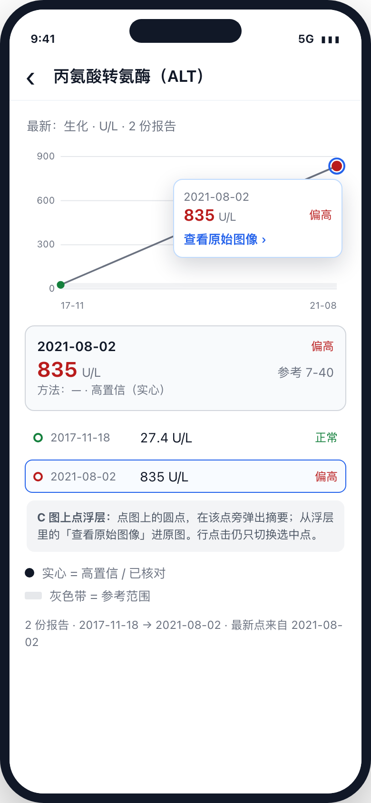
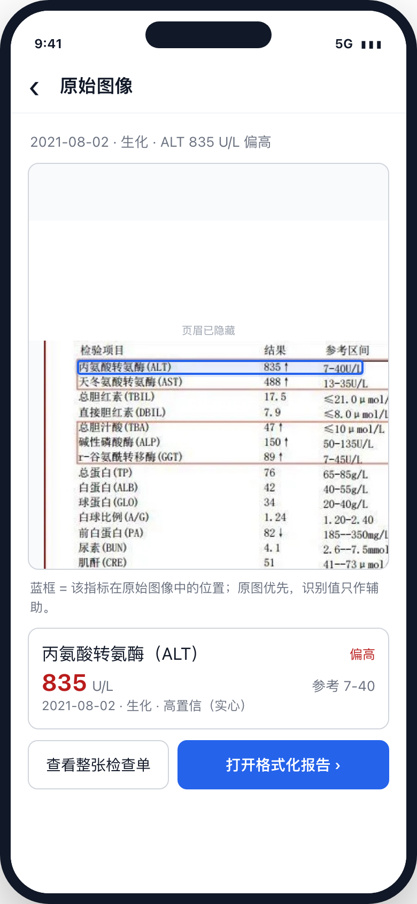
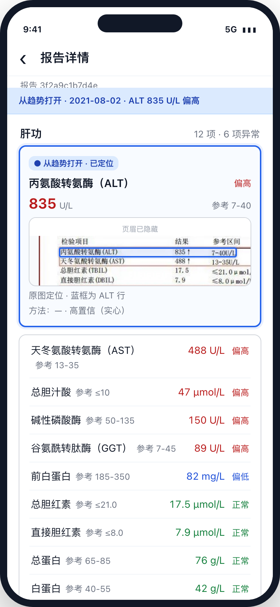
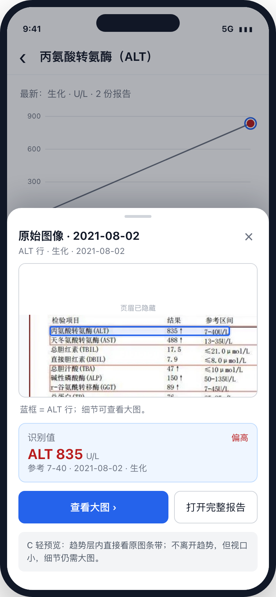
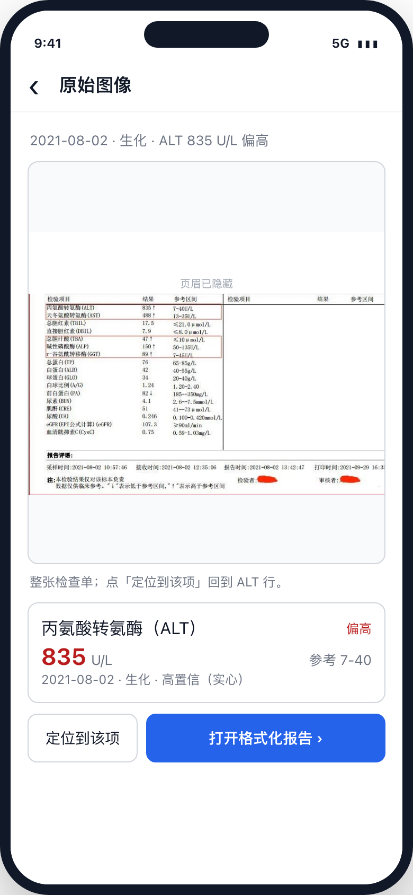

lft_02；原型截图隐藏了页眉 / 个人信息，生产展示用户自己的原图。




LineZoom / ocr_lines，实现最省。但图像是次要信息，条带太矮，不适合仔细看。

ReportItem.ocr_lines 已有行号 + 四点多边形框；现有 apps/mobile/src/components/LineZoom.tsx 和 zoomCrop 已能裁到对应行，不需要新的识别能力。TrendPoint 只有 report_id，没有 item_id。要定位到具体指标，需要按 name + unit 在报告详情里匹配，或给趋势点扩 item_id（契约变更）。ReviewItemCard，排序规则不变。